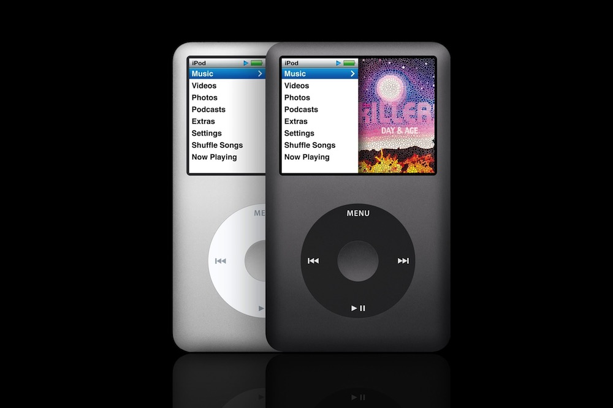

Добро пожаловать туда, где можно похвастаться своим iPod и рассказать, где вы с ним были. Хотите повеселиться вместе с нами? Всё, что вам для этого нужно, - это любой iPod: от раннего iPod Classic до самого большого iPod Video, а также цифровая камера. Просто сфотографируйте свой iPod в любимом месте, и мы будем рады поместить этот снимок на сайте myPod. Итак, чего вы ждёте?
Я и мой iPod в Сиэтле! Здесь видна башня Спейс Нидл. И не видно 628 кафе.
